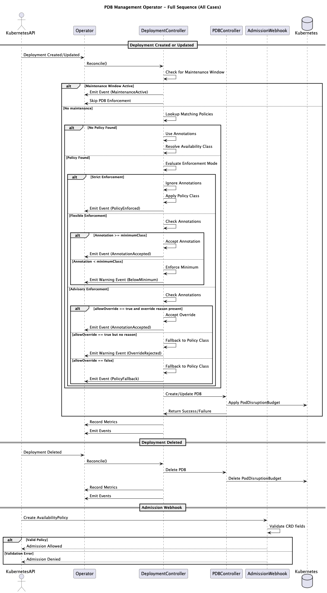
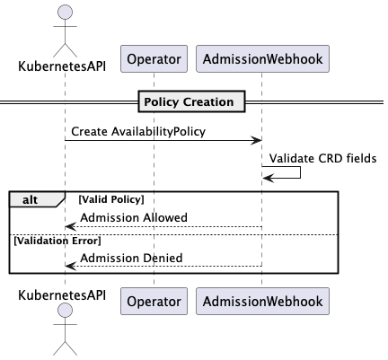
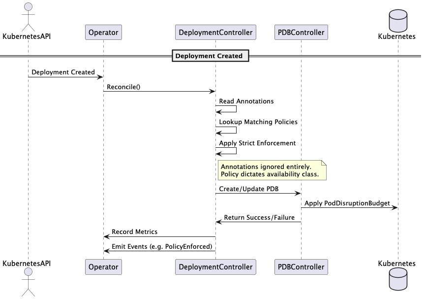
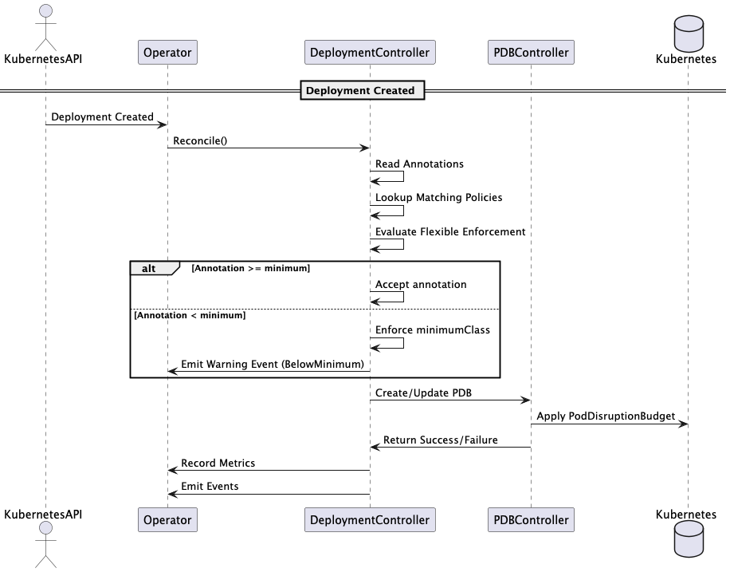
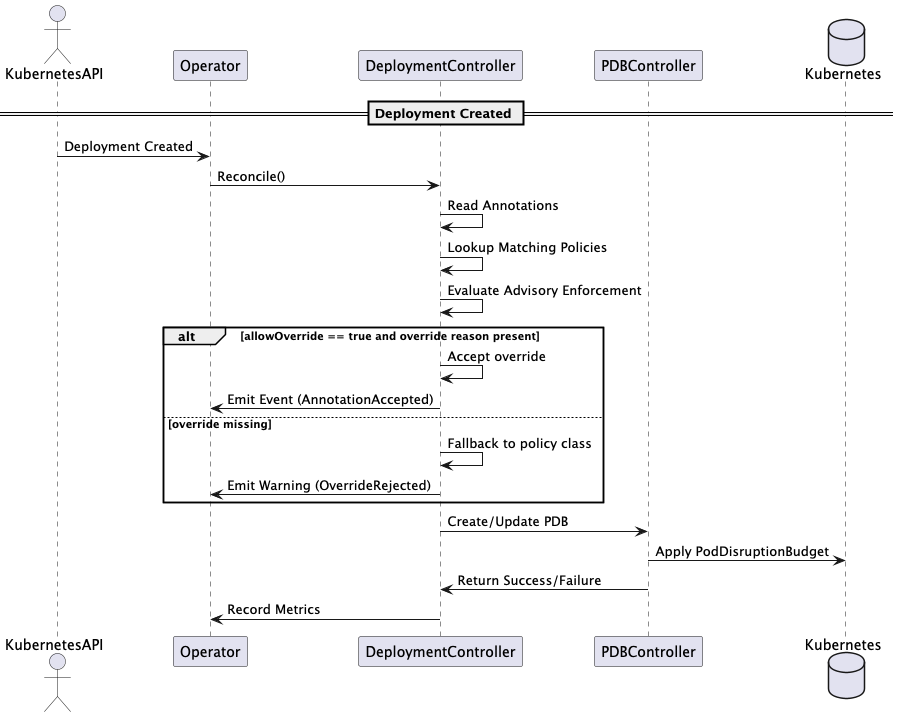
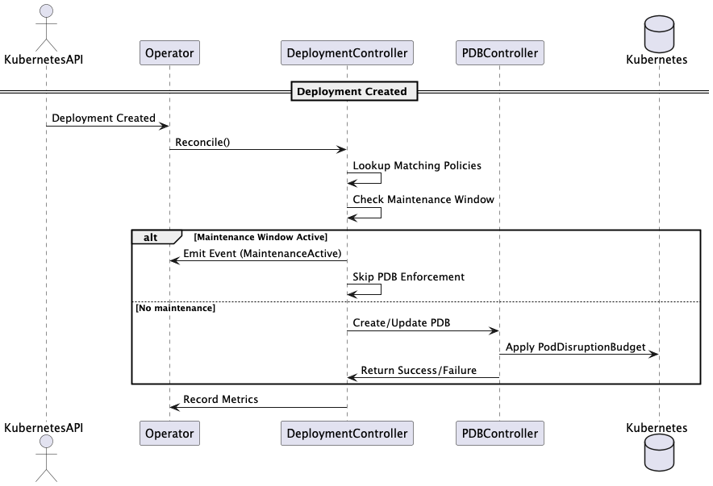
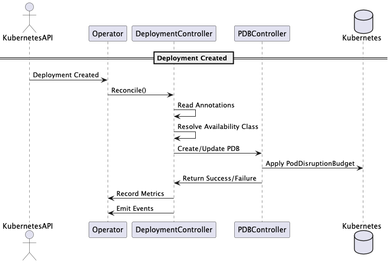
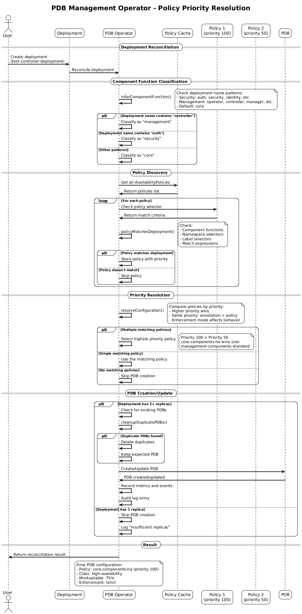
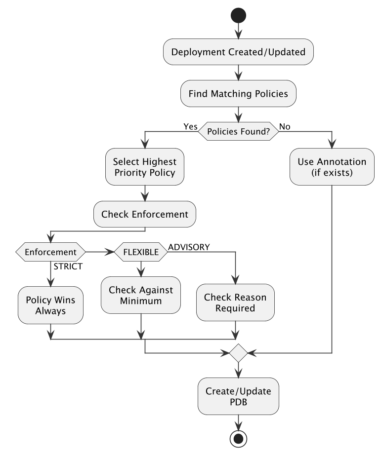
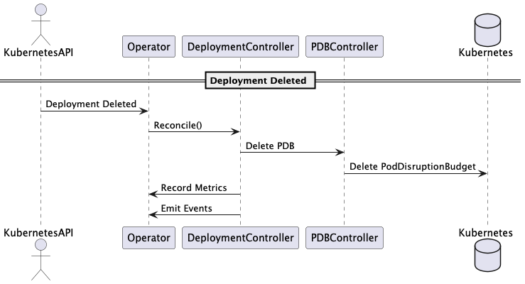

PDB Management Operator - Technical Documentation¶
Table of Contents¶
Overview¶
The PDB (Pod Disruption Budget) Management Operator is a Kubernetes operator designed specifically for the ODA (Open Digital Architecture) Canvas project. It automates the creation and management of Pod Disruption Budgets based on deployment annotations and custom policies, ensuring high availability and controlled disruptions for applications running in Kubernetes clusters.
Key Benefits¶
Automated PDB Management: Automatically creates and updates PDBs based on deployment annotations
Policy-Based Configuration: Define organization-wide availability policies using CRDs
Flexible Enforcement: Three enforcement modes (Strict, Flexible, Advisory) for different scenarios
AI-Powered Intelligence: Integrated MCP server for cluster analysis and intelligent recommendations
ODA Canvas Integration: Seamlessly integrates with ODA Canvas component architecture
High Performance: Optimized for managing 200+ deployments with efficient caching
Maintenance Windows: Support for scheduled maintenance periods
Comprehensive Observability: Built-in metrics, tracing, and audit logging
Architecture Overview¶
graph TB
subgraph cluster["Kubernetes Cluster"]
subgraph inputs["Input Resources"]
deployments["Deployments<br/>(with annotations)"]
policies["AvailabilityPolicies<br/>(CRDs)"]
end
subgraph operator["PDB Management Operator"]
subgraph controllers["Controllers"]
dc["Deployment<br/>Controller"]
pc["AvailabilityPolicy<br/>Controller"]
wh["Webhook<br/>Server"]
end
subgraph shared["Shared Components"]
cache["Cache"]
metrics["Metrics"]
events["Events"]
tracing["Tracing"]
end
end
pdbs["PDBs<br/>(auto-managed)"]
end
deployments --> dc
policies --> pc
dc --> shared
pc --> shared
wh --> shared
shared --> pdbs
Full Reconciliation Sequence¶
The following diagram shows the complete sequence of operations during deployment reconciliation, including all enforcement modes and edge cases:

Architecture¶
Design Principles¶
Separation of Concerns: Distinct controllers handle different aspects
High Performance: Optimized for large-scale deployment environments with caching and circuit breakers.
Resilience: Circuit breaker pattern prevents cascading failures
Observability: Comprehensive metrics, tracing, and audit logging
Flexibility: Both annotation-based and policy-based configuration
Security: Least privilege RBAC, admission webhooks for validation
Controller Architecture¶
The operator implements two main controllers, an admission webhook, and an MCP server:
Deployment Controller: Watches deployments for availability annotations
AvailabilityPolicy Controller: Manages custom availability policies
Admission Webhook: Validates and defaults AvailabilityPolicy resources
MCP Server: Provides AI-powered cluster analysis and recommendations via Model Context Protocol
Data Flow¶
flowchart TD
A[Deployment Created/Updated] --> B[Deployment Controller]
B --> C{Check Annotations}
C -->|Has Annotations| D[Annotation Based]
C -->|No Annotations| E[Policy Based]
E --> F[Policy Lookup]
D --> G[Enforcement Logic<br/>Strict/Flexible/Advisory]
F --> G
G --> H[Calculate PDB Parameters]
H --> I[Create/Update PDB]
Components¶
1. Deployment Controller¶
Responsible for:
Watching deployment changes
Extracting availability annotations
Looking up matching policies
Applying enforcement logic
Creating/updating PDBs
Key features:
Intelligent policy resolution with enforcement modes
Component function awareness
Maintenance window support
Efficient caching with TTL
2. AvailabilityPolicy Controller¶
Manages AvailabilityPolicy CRDs:
Validates policy specifications
Tracks policy usage
Handles policy updates
Manages policy priorities
3. Admission Webhook¶
Provides:
Validation of AvailabilityPolicy resources
Defaulting of optional fields
Warning generation for best practices
Prevention of invalid configurations

MCP Server Architecture¶
The integrated Model Context Protocol (MCP) server extends the operator with AI-powered cluster analysis capabilities. This component enables intelligent recommendations and natural language interaction for cluster management.
MCP Components¶
graph TB
subgraph mcpserver["MCP Server Layer"]
subgraph tools["Tool Categories"]
analysis["Analysis<br/>Tools"]
recommendation["Recommendation<br/>Tools"]
management["Management<br/>Tools"]
end
subgraph core["MCP Core Server"]
protocol["Protocol<br/>Handler"]
transport["Transport<br/>Layer"]
registry["Tool<br/>Registry"]
router["Request<br/>Router"]
end
end
http["HTTP Transport<br/>(Port 8090)"]
clients["MCP Clients"]
analysis --> core
recommendation --> core
management --> core
core --> http
http --> clients
Analysis Tools¶
Cluster Availability Analysis
PDB coverage assessment across namespaces
Availability gap identification
Deployment risk analysis
Compliance reporting
Workload Pattern Detection
Automatic pattern classification (API, database, frontend, etc.)
Replica distribution analysis
Component function inference
Deployment characteristics analysis
Recommendation Engine¶
Availability Class Recommendations
AI-powered classification based on workload characteristics
Security component detection and upgrade suggestions
Confidence scoring for recommendations
Impact analysis for changes
Policy Recommendations
Cluster-wide policy analysis
Pattern-based policy generation
Conflict resolution suggestions
Priority optimization
Management Interface¶
Policy Creation
Interactive policy definition
Validation and conflict checking
Template-based policy generation
Impact Simulation
What-if analysis for policy changes
Deployment impact assessment
Risk evaluation before applying changes
Deployment Management
Annotation updates via natural language
Batch operations across multiple deployments
MCP Protocol Implementation¶
The server implements the full MCP specification:
JSON-RPC 2.0: Standard protocol for request/response
Tools: Structured function calls with typed parameters
Prompts: Template-based interaction patterns
Resources: Dynamic resource access and management
Notifications: Real-time updates and status changes
Security and Access Control¶
Network Policies: Restricted access via Kubernetes NetworkPolicy
Client Authentication: Support for authenticated MCP clients
Audit Logging: All MCP operations are logged with correlation IDs
Rate Limiting: Built-in protection against abuse
Integration Points¶
The MCP server integrates with all existing operator components:
Policy Cache: Leverages existing caching for performance
Event System: Publishes events for MCP operations
Metrics: Exposes MCP-specific metrics
Tracing: Full OpenTelemetry correlation with operator traces
Features¶
1. Enforcement Modes¶
The operator supports three enforcement modes for policies:
Strict Enforcement¶
Policy configuration always wins
Annotations are ignored even if present
Use for compliance-critical environments
spec:
enforcement: strict
availabilityClass: mission-critical

Flexible Enforcement¶
Annotations accepted if they meet minimum requirements
Allows teams to opt for higher availability
Prevents downgrading below minimum
spec:
enforcement: flexible
availabilityClass: high-availability
minimumClass: standard # annotations must be >= standard

Advisory Enforcement¶
Annotations take precedence when present
Policy acts as fallback/default
Maximum flexibility for teams
spec:
enforcement: advisory # default
availabilityClass: standard

2. Component Function Intelligence¶
The operator automatically adjusts availability based on component function:
// Security components get upgraded availability
if componentFunction == "security" {
switch availabilityClass {
case "non-critical":
return "standard" // 20% → 50%
case "standard":
return "high-availability" // 50% → 75%
default:
return availabilityClass
}
}
3. Maintenance Windows¶
Support for scheduled maintenance periods:
maintenanceWindows:
- start: "02:00"
end: "04:00"
timezone: "UTC"
daysOfWeek: [0, 6] # Sunday, Saturday
During maintenance windows:
PDB enforcement is temporarily suspended
Metrics indicate maintenance mode
Audit logs track window activation

4. Intelligent Caching¶
Performance optimization features:
Policy cache with 5-minute TTL
Maintenance window result caching
Circuit breaker integration
Reduces API server load
5. Circuit Breaker Protection¶
Prevents cascading failures:
Per-operation circuit breakers
Opens after 60% failure rate (3 requests minimum)
30-second timeout before retry
Automatic recovery
6. Comprehensive Observability¶
Metrics¶
PDB lifecycle metrics (created, updated, deleted)
Reconciliation performance metrics
Cache hit/miss ratios
Enforcement decision tracking
Policy conflict resolution
Tracing¶
OpenTelemetry integration
Distributed trace support
Correlation ID propagation
Audit Logging¶
All PDB operations logged
Policy decisions tracked
Override attempts recorded
Compliance-ready format
Configuration¶
Environment Variables¶
Variable |
Default |
Description |
|---|---|---|
|
|
Enable PDB controller |
|
|
Default namespace for operations |
|
|
Namespace for metrics |
|
|
Leader election namespace |
|
|
Logging level (debug, info, warn, error) |
|
|
Tracing sample rate (0.0-1.0) |
|
- |
Jaeger collector endpoint |
|
- |
OTLP collector endpoint |
|
- |
Custom availability class definitions (JSON) |
Operator Flags¶
--metrics-bind-address string Metrics endpoint (default ":8080")
--health-probe-bind-address string Health probe endpoint (default ":8081")
--leader-elect Enable leader election (default true)
--watch-namespace string Namespace to watch (empty = all)
--sync-period duration Resync period (default 10h)
--enable-webhook Enable admission webhooks
--webhook-port int Webhook server port (default 9443)
--log-level string Log level (default "info")
--enable-tracing Enable OpenTelemetry tracing (default true)
--max-concurrent-reconciles int Max concurrent reconciles (default 5)
Usage¶
Basic Usage - Annotation Based¶
The simplest way to use the operator is via deployment annotations:

Add annotations to your deployment:
apiVersion: apps/v1
kind: Deployment
metadata:
name: my-app
annotations:
oda.tmforum.org/availability-class: "standard"
oda.tmforum.org/component-function: "core"
oda.tmforum.org/componentName: "my-app-component"
spec:
replicas: 3
# ... rest of deployment spec
Operator automatically creates PDB:
apiVersion: policy/v1
kind: PodDisruptionBudget
metadata:
name: my-app-pdb
labels:
oda.tmforum.org/managed-by: "pdb-management-operator"
spec:
minAvailable: 50%
selector:
matchLabels:
app: my-app
Policy-Based Configuration¶
Create an AvailabilityPolicy:
apiVersion: availability.oda.tmforum.org/v1alpha1
kind: AvailabilityPolicy
metadata:
name: production-databases
spec:
availabilityClass: mission-critical
enforcement: flexible
minimumClass: high-availability
componentSelector:
matchLabels:
type: database
environment: production
componentFunctions: [core]
priority: 100
maintenanceWindows:
- start: "02:00"
end: "04:00"
timezone: "UTC"
daysOfWeek: [0] # Sunday only
Deploy matching workloads:
apiVersion: apps/v1
kind: Deployment
metadata:
name: postgres-primary
labels:
type: database
environment: production
annotations:
# This annotation will be accepted if >= high-availability
oda.tmforum.org/availability-class: "mission-critical"
spec:
replicas: 3
# ... rest of deployment spec
API Reference¶
AvailabilityPolicy CRD¶
apiVersion: availability.oda.tmforum.org/v1alpha1
kind: AvailabilityPolicy
metadata:
name: <policy-name>
spec:
# Required: availability class for this policy
availabilityClass: high-availability # non-critical|standard|high-availability|mission-critical|custom
# Enforcement mode (default: advisory)
enforcement: flexible # strict|flexible|advisory
# Minimum class for flexible enforcement
minimumClass: standard # only used with flexible enforcement
# Component selector (at least one criterion required)
componentSelector:
# Select by namespaces
namespaces:
- production
- staging
# Select by component names
componentNames:
- payment-service
- auth-service
# Select by component functions
componentFunctions:
- core
- security
- management
# Select by labels
matchLabels:
tier: critical
# Select by expressions
matchExpressions:
- key: environment
operator: In
values: [prod, staging]
- key: region
operator: NotIn
values: [test, dev]
- key: sla
operator: Exists
# Priority for conflict resolution (default: 50)
priority: 100 # 0-1000, higher wins
# Maintenance windows
maintenanceWindows:
- start: "02:00"
end: "04:00"
timezone: "UTC"
daysOfWeek: [0, 6] # 0=Sunday, 6=Saturday
# Custom PDB configuration (only with custom availability class)
customPDBConfig:
minAvailable: "90%" # or absolute number like 2
# OR
maxUnavailable: 1 # or percentage like "10%"
unhealthyPodEvictionPolicy: "IfHealthyBudget" # AlwaysAllow|IfHealthyBudget
# Override controls
allowOverride: true # Whether to allow annotation overrides (ignored in strict mode)
overrideRequiresReason: true # Require override-reason annotation
# Minimum replicas enforcement
enforceMinReplicas: true # Ensure minimum replicas for availability class
Deployment Annotations¶
Annotation |
Required |
Description |
Example |
|---|---|---|---|
|
Yes* |
Availability class |
|
|
No |
Component function |
|
|
No |
Component identifier |
|
|
No |
Simple maintenance window |
|
|
No** |
Reason for override |
|
*Required unless matching an AvailabilityPolicy
**Required when policy has overrideRequiresReason: true
AvailabilityPolicy Deep Dive¶
Complete Feature Set¶
The AvailabilityPolicy CRD provides sophisticated control over PDB management:
1. Enforcement Modes with Examples¶
Strict Enforcement
apiVersion: availability.oda.tmforum.org/v1alpha1
kind: AvailabilityPolicy
metadata:
name: security-strict-policy
spec:
availabilityClass: mission-critical
enforcement: strict # Annotations completely ignored
componentSelector:
componentFunctions: [security]
priority: 1000
# Deployment with annotation (will be ignored):
metadata:
annotations:
oda.tmforum.org/availability-class: "standard" # IGNORED
# Result: PDB with 90% minAvailable (mission-critical from policy)
Flexible Enforcement
apiVersion: availability.oda.tmforum.org/v1alpha1
kind: AvailabilityPolicy
metadata:
name: production-flexible
spec:
availabilityClass: high-availability # Recommended
enforcement: flexible
minimumClass: standard # Minimum acceptable
componentSelector:
matchLabels:
environment: production
# Scenario 1: Annotation meets minimum
annotations:
oda.tmforum.org/availability-class: "mission-critical"
# Result: PDB with 90% (annotation accepted)
# Scenario 2: Annotation below minimum
annotations:
oda.tmforum.org/availability-class: "non-critical"
# Result: PDB with 50% (minimum enforced), warning logged
Advisory with Controls
apiVersion: availability.oda.tmforum.org/v1alpha1
kind: AvailabilityPolicy
metadata:
name: dev-advisory
spec:
availabilityClass: standard
enforcement: advisory
allowOverride: true
overrideRequiresReason: true
componentSelector:
matchLabels:
environment: development
# Valid override:
metadata:
annotations:
oda.tmforum.org/availability-class: "non-critical"
oda.tmforum.org/override-reason: "Batch processing workload"
# Result: PDB with 20% (override accepted)
# Invalid override (missing reason):
metadata:
annotations:
oda.tmforum.org/availability-class: "non-critical"
# Result: PDB with 50% (policy default), override rejected
2. Advanced Selection Capabilities¶
Multi-Namespace Policy
spec:
componentSelector:
namespaces:
- production
- staging
- pre-prod
matchLabels:
managed-by: platform-team
Component Function Based
spec:
componentSelector:
componentFunctions:
- core # Core business logic
- security # Auth, encryption
- management # Admin, monitoring
Complex Label Expressions
spec:
componentSelector:
matchExpressions:
- key: tier
operator: In
values: [gold, platinum]
- key: region
operator: NotIn
values: [dev, test]
- key: sla
operator: Exists
3. Custom PDB Configurations¶
Database-Specific Settings
apiVersion: availability.oda.tmforum.org/v1alpha1
kind: AvailabilityPolicy
metadata:
name: database-custom
spec:
availabilityClass: custom
customPDBConfig:
minAvailable: 2 # Absolute number for stateful sets
unhealthyPodEvictionPolicy: "IfHealthyBudget"
componentSelector:
componentNames:
- postgres-primary
- postgres-secondary
Percentage with Specific Policy
spec:
availabilityClass: custom
customPDBConfig:
maxUnavailable: "25%" # Different from minAvailable
unhealthyPodEvictionPolicy: "AlwaysAllow"
4. Maintenance Window Configurations¶
Complex Maintenance Schedule
spec:
maintenanceWindows:
# Weekday maintenance (Mon-Fri 2-4 AM)
- start: "02:00"
end: "04:00"
timezone: "UTC"
daysOfWeek: [1, 2, 3, 4, 5]
# Weekend maintenance (Sat-Sun all day)
- start: "00:00"
end: "23:59"
timezone: "UTC"
daysOfWeek: [0, 6]
5. Priority and Conflict Resolution¶
When multiple policies match a deployment, the operator uses priority to resolve conflicts:


Priority Chain Example
# Highest priority - catches security components
- name: security-override
priority: 1000
componentSelector:
componentFunctions: [security]
# Medium priority - catches production
- name: production-policy
priority: 500
componentSelector:
matchLabels:
environment: production
# Lowest priority - catch-all
- name: default-policy
priority: 1
componentSelector:
matchLabels: {} # Matches everything
Policy Matching Logic¶
Namespace Filter (if specified)
Deployment must be in one of the listed namespaces
Component Name Match (if specified)
Checks
oda.tmforum.org/componentNameannotationFalls back to deployment name if annotation missing
Component Function Match (if specified)
Checks
oda.tmforum.org/component-functionannotationDefaults to “core” if not specified
Label Selector Match (if specified)
Standard Kubernetes label matching
Both matchLabels and matchExpressions supported
All specified criteria must match (AND logic).
Webhook Validation Rules¶
The admission webhook enforces these rules:
Availability Class Validation
Must be one of: non-critical, standard, high-availability, mission-critical, custom
Custom requires customPDBConfig
Custom PDB Config Validation
Must specify either minAvailable OR maxUnavailable (not both)
Values must be valid (percentage or number)
UnhealthyPodEvictionPolicy must be valid if specified
Component Selector Validation
At least one selection criterion required
Namespaces must be valid DNS names
Label keys/values must be valid
Maintenance Window Validation
Start/end times must be valid HH:MM format
Timezone must be valid IANA timezone
DaysOfWeek must be 0-6
Enforcement Configuration
MinimumClass only valid with flexible enforcement
MinimumClass must be valid availability class
Override settings ignored in strict mode
Audit Events¶
The operator generates events for policy decisions:
Events: Type Reason Age From Message
---- ------ ---- ---- --------
Warning PolicyEnforced 1m pdb-management-operator Annotation override blocked by strict policy security-strict-policy
Normal AnnotationAccepted 30s pdb-management-operator Annotation mission-critical meets minimum requirement standard
Warning BelowMinimum 15s pdb-management-operator Annotation non-critical below minimum standard, using standard
Normal MaintenanceActive 5s pdb-management-operator Entering maintenance window, PDB enforcement suspended
Migration Guide¶
From v1alpha to v1alpha1¶
Update CRD version:
# Old apiVersion: pdb.oda.tmforum.org/v1alpha # New apiVersion: availability.oda.tmforum.org/v1alpha1
New enforcement field:
spec: enforcement: flexible # new field minimumClass: standard # new field for flexible mode
Enhanced webhook validation:
Automatic defaulting of maintenance window timezones
Validation of enforcement configurations
Warning generation for best practices
Internals¶
Caching Strategy¶
The operator uses a multi-level caching strategy:
Policy Cache: 5-minute TTL, 100 entry limit
Maintenance Window Cache: 1-minute TTL for active checks
Deployment State Cache: Tracks managed deployments
Circuit Breaker Implementation¶
// Per-operation circuit breakers
breakers := map[string]*gobreaker.CircuitBreaker{
"create-pdb": newBreaker("create-pdb"),
"update-pdb": newBreaker("update-pdb"),
"delete-pdb": newBreaker("delete-pdb"),
}
// Configuration
Settings: gobreaker.Settings{
Timeout: 30 * time.Second,
ReadyToTrip: func(counts gobreaker.Counts) bool {
failureRatio := float64(counts.TotalFailures) / float64(counts.Requests)
return counts.Requests >= 3 && failureRatio >= 0.6
},
}
Reconciliation Logic¶
Deployment Controller:
Processes deployment changes
Resolves configuration (annotation vs policy)
Applies enforcement logic
Creates/updates/deletes PDBs
AvailabilityPolicy Controller:
Processes policy changes
Triggers re-reconciliation of affected deployments
Updates policy metrics
Deployment Deletion Handling¶
When a deployment is deleted, the operator ensures proper cleanup of associated PDBs:

Monitoring & Observability¶
Key Metrics¶
# PDB lifecycle
pdb_management_pdbs_created_total{namespace, availability_class, component_function}
pdb_management_pdbs_updated_total{namespace, availability_class}
pdb_management_pdbs_deleted_total{namespace, reason}
# Performance
pdb_management_reconciliation_duration_seconds{controller, result}
pdb_management_reconciliation_errors_total{controller, error_type}
# Enforcement
pdb_management_enforcement_decisions_total{enforcement_mode, decision, namespace}
pdb_management_override_attempts_total{result, reason, namespace}
pdb_management_policy_conflicts_total{resolution, enforcement_mode, namespace}
# Cache
pdb_management_cache_hits_total{cache_type}
pdb_management_cache_misses_total{cache_type}
# Resources
pdb_management_deployments_managed{namespace, availability_class}
pdb_management_policies_active{namespace}
Grafana Dashboard¶
A comprehensive dashboard is available at dashboards/pdb-management.json featuring:
PDB lifecycle metrics
Enforcement decision breakdown
Cache performance
Error rates and types
Reconciliation performance
Unified Logging System¶
The operator implements a comprehensive unified logging system that provides structured, traceable logs with full observability and eliminates field duplication.
Architecture¶
The unified logging system consists of:
UnifiedLogEntry: Single struct for all log entries
UnifiedLogger: Centralized logger with context propagation
Trace Context: Automatic propagation of trace_id, span_id, correlationID
Structured Output: Consistent JSON format across all log types
Log Structure¶
All logs follow a consistent structure:
{
"level": "info",
"ts": "2025-07-06T09:50:22.454304592Z",
"msg": "Starting reconciliation",
"controller": {
"type": "deployment-pdb",
"name": "deployment-controller",
"group": "apps",
"kind": "Deployment"
},
"resource": {
"type": "deployment",
"name": "tmf620-productcatalog",
"namespace": "components"
},
"reconcileID": "deployment-f959cd46-f5c8-497f-b84d-b6d0d0ce04a2",
"correlationID": "b558f470-b55d-4af4-b9b4-b7a6043ce95f",
"trace": {
"trace_id": "2b4148def0c46c496b41c1ade1c7cc7f",
"span_id": "55b5595fbf126025"
},
"details": {
"availabilityClass": "high-availability",
"source": "annotation-no-policy"
}
}
Trace Context Fields¶
trace_id: OpenTelemetry trace identifier for distributed tracing
span_id: Current operation span identifier
correlationID: Business correlation identifier for request tracking
reconcileID: Kubernetes reconciliation identifier
Audit Logging¶
Audit logs include full trace context and structured details:
{
"level": "info",
"ts": "2025-07-06T09:50:22.457153467Z",
"msg": "Audit log",
"controller": {
"type": "pdb-direct",
"name": "pdb-direct-controller",
"group": "apps",
"kind": "Deployment"
},
"resource": {
"type": "poddisruptionbudget",
"name": "tmf620-productcatalog",
"namespace": "components"
},
"reconcileID": "pdb-526803c1-b0b4-46ed-83e2-3a0357fdc594",
"correlationID": "f7da36c6-716a-4e65-89b7-cb83476542fd",
"trace": {
"trace_id": "8e37377bd4ff755b7e21278e06bd73fd",
"span_id": "450fe3d49c33229e"
},
"details": {
"action": "CREATE",
"availabilityClass": "high-availability",
"correlationId": "",
"maxUnavailable": null,
"minAvailable": "75%",
"name": "tmf620-productcatalog",
"namespace": "components",
"resource": "tmf620-productcatalog-pdb",
"resourceType": "PodDisruptionBudget",
"result": "SUCCESS",
"timestamp": "2025-07-06T09:50:22Z"
}
}
Implementation Details¶
The unified logging system is implemented in internal/logging/unified.go:
type UnifiedLogEntry struct {
Level string `json:"level"`
Timestamp time.Time `json:"ts"`
Message string `json:"msg"`
Controller ControllerInfo `json:"controller"`
Resource ResourceInfo `json:"resource"`
ReconcileID string `json:"reconcileID"`
CorrelationID string `json:"correlationID"`
Trace TraceInfo `json:"trace"`
Details map[string]interface{} `json:"details,omitempty"`
}
type UnifiedLogger struct {
logger logr.Logger
context context.Context
controller ControllerInfo
resource ResourceInfo
reconcileID string
correlationID string
}
Context Propagation¶
The system automatically propagates trace context:
OpenTelemetry Integration: Automatic trace_id and span_id extraction
Correlation ID: Business correlation identifier for request tracking
Reconcile ID: Kubernetes reconciliation identifier
Controller Context: Controller type, name, group, and kind
Resource Context: Resource type, name, and namespace
Log Analysis¶
Advanced log analysis capabilities:
# Filter by trace ID for distributed tracing
kubectl logs -n canvas deployment/pdb-management-controller-manager | \
jq 'select(.trace.trace_id == "2b4148def0c46c496b41c1ade1c7cc7f")'
# Find all audit logs for a specific resource
kubectl logs -n canvas deployment/pdb-management-controller-manager | \
jq 'select(.msg == "Audit log" and .details.resource == "my-app-pdb")'
# Track complete reconciliation flow
kubectl logs -n canvas deployment/pdb-management-controller-manager | \
jq 'select(.reconcileID == "deployment-f959cd46-f5c8-497f-b84d-b6d0d0ce04a2")'
# Analyze enforcement decisions
kubectl logs -n canvas deployment/pdb-management-controller-manager | \
jq 'select(.details.enforcement) | .details'
Tracing¶
The operator supports OpenTelemetry tracing with full context propagation:
graph TD
A[deployment-reconcile] --> B[get-deployment]
A --> C[check-annotations]
A --> D[lookup-policies]
D --> E[cache-lookup]
A --> F[resolve-configuration]
F --> G[apply-enforcement]
A --> H[manage-pdb]
H --> I[get-existing-pdb]
H --> J[create-or-update-pdb]
All trace spans include the unified logging context for complete observability.
Performance¶
Benchmarks¶
Tested with 200+ deployments:
Reconciliation time: < 100ms average
Cache hit rate: > 90%
Memory usage: < 100MB
CPU usage: < 100m
Optimization Techniques¶
Efficient watching: Predicate filters reduce unnecessary reconciliations
Batch processing: Groups related operations
Smart caching: TTL-based with size limits
Circuit breakers: Prevent cascade failures
Security¶
RBAC Configuration¶
Minimal required permissions:
- apiGroups: ["apps"]
resources: ["deployments"]
verbs: ["get", "list", "watch", "update", "patch"]
- apiGroups: ["policy"]
resources: ["poddisruptionbudgets"]
verbs: ["get", "list", "watch", "create", "update", "patch", "delete"]
- apiGroups: ["availability.oda.tmforum.org"]
resources: ["availabilitypolicies"]
verbs: ["get", "list", "watch"]
Security Features¶
Non-root execution: Runs as non-root user
Read-only filesystem: Except for temp directories
Dropped capabilities: All capabilities dropped
Network policies: Support for network isolation
Webhook authentication: Cert-based webhook auth
Pod Security Standards¶
Complies with Kubernetes restricted security standards:
runAsNonRoot: truereadOnlyRootFilesystem: trueallowPrivilegeEscalation: falseseccompProfile: RuntimeDefault
Troubleshooting¶
Common Issues¶
PDB Not Created
Check deployment annotations:
kubectl get deployment my-app -o jsonpath='{.metadata.annotations}'
Check operator logs:
kubectl logs -n canvas deployment/pdb-management-controller-manager
Policy Not Matching
Verify policy selector:
kubectl describe availabilitypolicy my-policy
Check deployment labels:
kubectl get deployment -l tier=frontend
Enforcement Not Working as Expected
Check policy enforcement mode:
kubectl get availabilitypolicy my-policy -o jsonpath='{.spec.enforcement}'
Review enforcement decisions in metrics:
curl http://operator-pod:8080/metrics | grep enforcement_decisions
Maintenance Window Issues
Verify timezone:
kubectl exec -n canvas deployment/pdb-management-controller-manager -- date
Check maintenance window configuration:
kubectl get availabilitypolicy my-policy -o jsonpath='{.spec.maintenanceWindows}'
High Memory Usage
Check cache statistics:
pdb_management_cache_hits_total
pdb_management_cache_misses_total
Review managed deployments:
kubectl get deployments -A -o json | jq '.items | length'
Debug Mode¶
Enable debug logging:
kubectl -n canvas set env deployment/pdb-management-controller-manager LOG_LEVEL=debug
Health Checks¶
# Liveness
curl http://operator-pod:8081/healthz
# Readiness
curl http://operator-pod:8081/readyz
# Metrics
curl http://operator-pod:8080/metrics